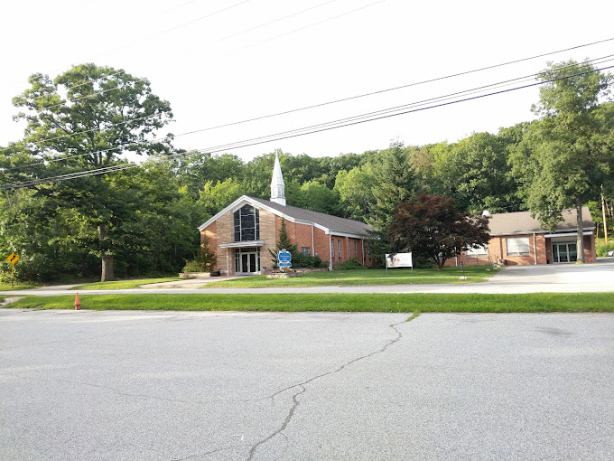
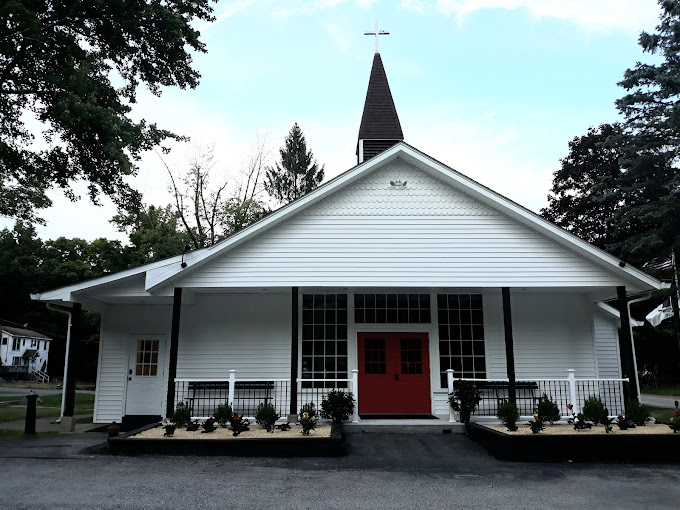
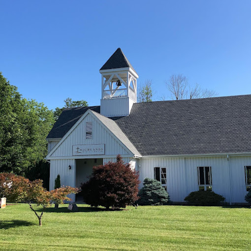

| Buildings |
Addresses |
ACME Markets
|
530 Rt 515 Unit 1, Vernon Township, NJ 07462 |
(973) 764-5350 |
 |
ACME Markets is a chain of grocery stores that offer a wide range of food and household products, including fresh produce, meat, dairy, and pantry items, catering to the needs of local communities. |
Healthy Thymes Market
|
265 NJ-94, Vernon Township, NJ 07462 |
(973) 209-8555 |
 |
|
CVS Pharmacy and General Store
|
302 NJ-94, Vernon Township, NJ 07462 |
(973) 764-0606 |
 |
CVS is a leading pharmacy and retail healthcare company offering a wide range of products and services in the United States. |
Dollar General
|
46 NJ-94, Vernon Township, NJ 07462 |
(862) 207-4191 |
 |
Dollar General is a prominent American chain of discount retail stores that provides a variety of affordable household goods, groceries, clothing, and more, typically catering to budget-conscious shoppers. |
Highland General Store
|
111 Highland Lakes Rd, Highland Lakes, NJ 07422 |
(973) 764-4541 |
 |
The Highland General Store in Vernon, NJ, is a local retail establishment catering to the needs of the community. It typically offers a range of goods, including groceries, convenience items, and spirits. |